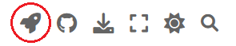
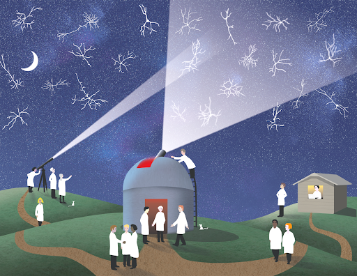

OpenScope Databook#
The OpenScope Databook: Reproducible System Neuroscience Notebooks to Facilitate Data Sharing and Collaborative Reuse with Open Science Datasets#
Supplied any substantial contribution to the project
Katrina Ager, Shailaja Akella, Ahad Bawany, Corbett Bennett, Benjamin Dichter, Satrajit Ghosh, Colleen J. Gillon, Yaroslav Halchenko, Santiago Jaramillo, Yeerim Kim, Carly Kiselycznyk, Jerome Lecoq, Mackenzie Mathis, R. Carter Peene, Jason Pina, Steph Prince, Hyeyoung Shin, Josh Siegle, sjara, Jacob Westerberg, Alex WilliamsPerformed administrative and supervisory duties
Carly Kiselycznyk, Jerome LecoqContributed ideas significant to the development of the project and its content
Benjamin Dichter, Satrajit Ghosh, Jerome Lecoq, R. Carter Peene, Jason Pina, Hyeyoung Shin, Jacob WesterbergProcessed data used in the project or wrote substantial code to do so
Katrina Ager, Ahad Bawany, Corbett Bennett, Colleen J. Gillon, Yaroslav Halchenko, Yeerim Kim, R. Carter Peene, Josh SiegleCommitted code to the primary Github repository
R. Carter Peene (1383), Katrina Ager (76), Jerome Lecoq (15), sjara (9), Colleen J. Gillon (5), Santiago Jaramillo (8), Yaroslav Halchenko (5), Steph Prince (4), Yeerim Kim (2), Mackenzie Mathis (2), Shailaja Akella (1)Reviewed code or content components the project or the project as a whole
Shailaja Akella, Mackenzie Mathis, Alex WilliamsProvided funds key to supporting the development of the project
NIHMore author information can be found on the Contributors Page
Abstract#
Reproducibility is a significant challenge in neuroscience, as analysis and visualization methods are often difficult to replicate due to a lack of accessible code, separation of code from published figures, or unavailability of code altogether. This issue may arise from the complex nature of neuroscience research, the use of diverse data formats and analysis techniques, and insufficient emphasis on open-source, collaborative practices. In addition, key neuroscience analyses are typically rewritten at the start of new scientific projects, slowing down the initiation of research efforts.
Four key components are essential for reproducible analysis: accessible data, accessible computational resources, a reproducible environment, and usage documentation. The OpenScope Databook, provided by the Allen Institute’s OpenScope Project, offers a solution to these challenges by facilitating the analysis and visualization of brain data, primarily using NWB files and the DANDI archive. Hosted on Github, the entire publication – including code, data access, text, references, and revisions from reviewers and contributors – is readily available for collaboration and version control, promoting transparency and collective knowledge growth. The OpenScope Databook addresses these components by leveraging a combination of open-source Python libraries, such as DANDI, Binder, Jupyter Book, Google Colab, LaTeX references, Python scripts, Git versioning, and scientific revision through approved pull requests. The entire publication can be recreated by running the code locally, on distributed servers such as Binder, DandiHub, or Google Colab, or on any host running Jupyter notebooks.
We cover several broadly used analyses across the community, providing a missing component for system neuroscience. Our key analyses are organized into chapters, including NWB basics such as downloading, streaming, and visualizing NWB files from data archives. We document essential analyses typically performed in all neuroscience laboratories, such as temporal alignment, alignment to sensory stimuli, and association with experimental metadata. We cover the two leading neuronal recording techniques: two-photon calcium imaging and electrophysiological recordings, and share example analyses of stimulus-averaged responses. Advanced first-order analyses include showing receptive fields, identifying optotagged units, current source density analysis, and cell matching across days.
This resource is actively maintained and can be updated by the community, providing a living document that will grow over time.
How Can I Use It?#
There are four ways to run this code. With Binder, with Thebe, Dandihub, or Locally. All external platforms are launchable from the top-right of any notebook with the Launch rocket button in the top-right of the Databook.

Binder#
Binder will automatically setup the environment with repo2docker and then execute the code in an instance of JupyterHub where the kernel is run. JupyterHub offers a lot of utilities for interacting with Jupyter notebooks and the environment. A given notebook can be launched in Binder by hovering over the Launch button in the top-right and selecting Binder. Occasionally, Binder will have to rebuild the environment before starting JupyterLab, which can take many minutes.
Thebe#
Thebe uses Binder in the backend to prepare the environment and run the kernel. It allows users to run notebooks embedded directly within the Databook’s web UI. It can be used by hovering over the Launch button in the top-right of a notebook and selecting Live Code. Thebe is a work-in-progress project and has room for improvement. It is also worth noting that, like Binder, starting the Jupyter Kernel can sometimes take many minutes.
Dandihub#
Dandihub is an instance of JupyterHub hosted by DANDI. Dandihub does not automatically reproduce the environment required for these notebooks, but importantly, Dandihub allows for persistent storage of your files, so you can leave your work and come back to it later. It can be used by hovering over the Launch button in the top-right of a notebook and selecting JupyterHub. In order to run notebooks on Dandihub, you must sign in with your Github account. To set up the correct environment on Dandihub, open a terminal tab, navigate to the directory openscope_databook and run the command
pip install -e .
Locally#
You can download an individual notebook by pressing the Download button in the top-right and selecting .ipynb. Alternatively, you can clone the repo to your machine and access the files there. The repo can be found by hovering over the the Github button in the top-right and selecting repository. When run locally, the environment can be replicated with our requirements.txt file using the command
pip install -e .
It is recommended that this is done within a conda environment using Python 3.10 to minimize any interference with local machine environments. For information on installing and using conda, go here. Before running the pip installation above, you can create a conda environment in the conda prompt with the command
conda create -n databook_env python=3.10
and you can run that environment with
conda activate databook_env
Once you environment is setup, you can execute the notebooks in Jupyter by running the following command within the repo directory;
Jupyter notebook
How Does It Work?#
Reproducible Analysis requires four components;
Accessible Data
Accessible Computational Resources
Reproducible Environment
Documentation of Usage
The Databook leverages a number of technologies to combine those components into a web-application.
Data#
Data is accessed from The DANDI archive and downloaded via the DANDI Python API within notebooks. Most notebooks make use of publicly available datasets on DANDI, but for some notebooks, there is not yet sufficient publicly-available data to demonstrate our analysis. For these, it is encouraged to use your own NWB Files that are privately stored on DANDI.
Computation#
This project utilizes Binder, as the host for the environment and the provider of computational resources. Conveniently, Binder has support for effectively replicating a computational environment from a Github Repo. Users of the Databook don’t have to worry about managing the environment if they prefer to use our integrated Binder functionality. However, the Databook can be run locally or on other hosts. Details about the different ways to run this code can be found in the section How Can I Use It? below.
Environment#
As mentioned above, Binder is capable of reproducing the environment in which to run this code. There are also other options for creating the necessary environment. Instructions for running this code locally can be found in the section How Can I Use It? below.
Documentation#
The great part about this Databook is that the usage of the code is explained within each notebook. The instructions found here should be sufficient for utilizing our code and accurately reproducing a number of different analyses on the relevant data.
Statement of Support#
We are releasing this code to the public as a tool we expect others to use. We are actively updating and maintaining this project. Issue submissions here are encouraged. Questions can be directed to @rcpeene or @jeromelecoq. We are open to hearing input from users about what types of analysis and visualization might be useful for reproducible neuroscience, particularly when working with the NWB standard.
